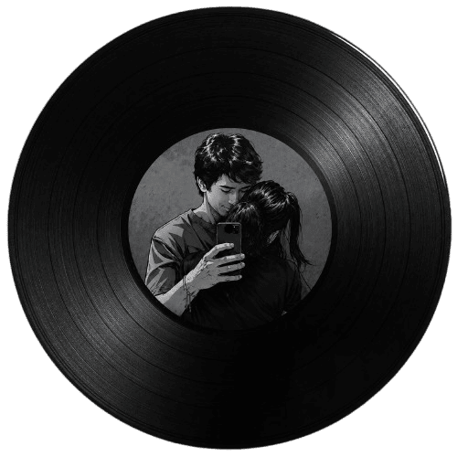

Colección personal
Holaaa
No sé si las personas pueden conocerse a través de canciones, pero me gusta pensar que sí. Así que, de alguna forma, aquí hay pequeños pedazos de mí. Algunas hablan por mí, otras solo me encontraron en el momento correcto. No espero que todas te gusten, solo que alguna, en el momento indicado, también encuentre un lugar en ti. Son 27 canciones. Una por cada año de vida. 7w7

Reproduciendo ahora
Hoy en tu cumpleaños
Fernando Delgadillo
0:00
0:00
Abrir en YouTube
🔈
Biblioteca